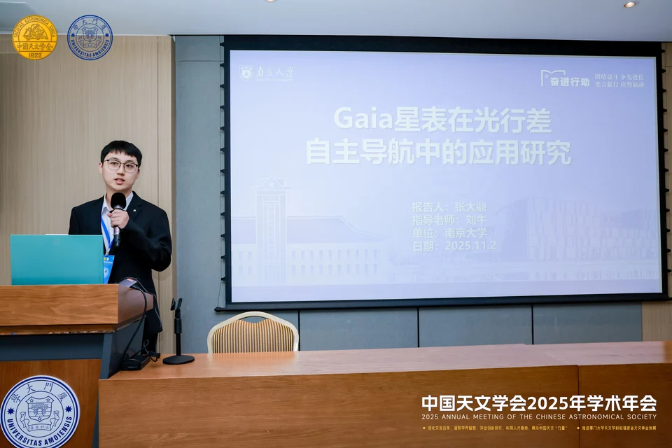

研究Research
地球章动与 VLBI
硕士阶段参与新的地球章动模型研制，关注甚长基线干涉测量（VLBI）理论时延与地球定向参数。
天球参考架与天体测量星表
关注 Gaia 光学天体测量与 VLBI 射电天体测量，以及不同波段天球参考架之间的联系。
恒星光行差自主导航
本科阶段研究 Gaia DR3 导航星表的构建与性能，并评估星表和底片常数解的不确定度对速度估计的影响。
代表论文Publications
-
Astrometric Systematic Errors as a Limiting Factor in Stellar-Aberration-Based Autonomous Navigation
利用 Gaia DR3 进行全天评估，比较九种底片常数模型，并量化底片常数解不确定度对应的速度误差量级。
-
Astrometric properties of reference frame sources as a function of redshift
利用射电和光学星表研究参考架源的天体测量性质及其与红移的关系。
项目Projects
-
航天器光行差自主导航技术中的天体测量系统误差研究
建立从星表和底片模型到导航量的误差传播关系，评估底片常数解的精度，并探索利用星对角距减小几何畸变的影响。
-
基于 Gaia DR3 的光行差导航星表
从导航星密度、全天成像概率和星位精度三个方面评估导航星表，分析恒星自行对跨历元导航精度的影响。
-
卫星自动定轨与姿态调整
用 MATLAB 实现 Laplace 定轨算法，并用 STK 开展链路仿真。
-
伽马射线暴（GRB）密度图分类
将 FITS 观测数据转换为标准化密度图，训练卷积神经网络进行分类。
报告Talks
Gaia 星表在光行差自主导航中的应用研究
经历Education & Visits
- 2026 年至今
- 南京大学天文与空间科学学院 · 硕士研究生
- 2026 年 3–5 月
- 比利时皇家天文台 · 访问期间开展近场 VLBI 理论时延研究
- 2022–2026 年
- 南京大学 · 空间科学与技术学士
联系Contact
南京大学天文与空间科学学院